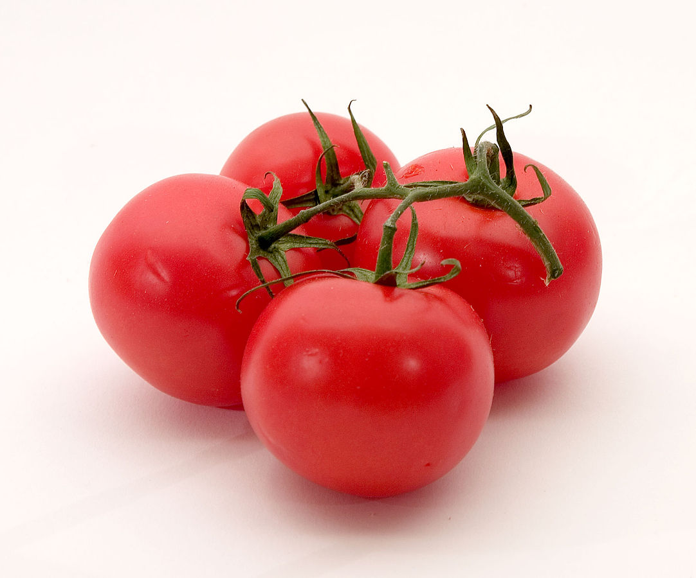

Tomato
It is shiny and smooth. It has many small seeds. It is also very good for health. Most tomatoes are red. The tomato is green when it is unripe. It slowly changes colour from green to red as it gets ripe, and as it gets ripe it gets bigger and bigger. There are many different types of tomatoes. Some kinds of tomato are yellow or orange when they are ripe. Tomatoes are used a lot in Italian food. They are also used to make ketchup. The species originated in western South America and Central America. The tomato is consumed in diverse ways, raw or cooked, in many dishes, sauces, salads, and drinks.

Tomato